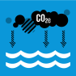
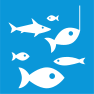
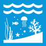
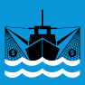
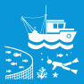

Reduce personal seafood consumption:
Aim to reduce personal seafood consumption by X% (e.g., 20%) within the next year, focusing on choosing sustainably sourced seafood options.

Minimize food waste
Target a reduction of food waste by X% (e.g., 25%) within the next year by implementing strategies such as meal planning, proper storage, and composting.

Water conservation
Reduce personal water consumption by X% (e.g., 15%) within the next year through measures such as fixing leaks, installing water-saving devices, and adopting water-efficient practices.

Advocacy and policy support
Commit to writing X (e.g., 3) letters or emails to policymakers within the next six months advocating for sustainable aquaculture policies and regulations.

Education and outreach
Set a goal to educate X number of people (e.g., 100) about the importance of sustainable aquaculture within the next year through presentations, workshops, or social media campaigns.

Conservation volunteering
Dedicate X hours (e.g., 20) to volunteering with a local or global conservation organization focused on aquatic ecosystem protection and sustainable aquaculture practices within the next six months.

Promote eco-friendly aquaculture
Aim to switch X% (e.g., 30%) of your aquaculture product purchases to eco-friendly options, such as RAS or IMTA, within the next year.

Support research and innovation
Allocate X amount (e.g., $500) towards supporting research and innovation in sustainable aquaculture technologies or practices within the next year.
Engagement with retailers and restaurants
Commit to engaging with X (e.g., 5) seafood retailers or restaurants within the next six months to advocate for sustainable seafood options and transparent sourcing practices.
IMPLEMENT AND ENFORCE INTERNATIONAL SEA LAW
Enhance the conservation and sustainable use of oceans and their resources by implementing international law as reflected in the United Nations Convention on the Law of the Sea, which provides the legal framework for the conservation and sustainable use of oceans and their resources, as recalled in paragraph 158 of “The future we want”.